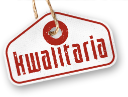
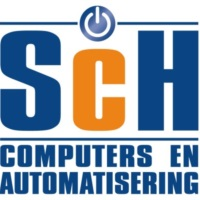

Naam en voorletters : Veth , N
Adres : Zuurbeshof 32
Postcode : 3355 RL
Woonplaats : Papendrecht
Telefoonnummer : 078-6410047
.Gsm : 0640938173
E-mailadres : nico.veth@hotmail.com
Geboortedatum : 16-12-1997
Geboorteplaats : Dordrecht
Burgerlijke staat : ongehuwd
Geslacht : man
Mijn doelen zijn om ver te komen in de ICT.
Wat betekenen voor de ICT wereld en ook natuurlijk veel geld verdienen.
Buiten school en werken ben ik graag buiten met vrienden.
Af en toe gamen en films etc kijken vind ik ook leuk
2016-Heden : Applicatieontwikkelaar niveau 4 op het Da vinci College te Dordrecht.
2014-2016 : Medewerker Beheer ICT niveau 3 op het Da Vinci College te Dordrecht, diploma gehaald.
2012-2014 : vmbo-kader elektrotechniek op het Willem de Zwijger College te Papendrecht, diploma gehaald.
2016-heden : Bezorger bij Kwalitaria te Papendrecht.
2015-2016 :Technische dienst mederwerker (stage) bij SCH te sliedrecht.
2014-2015 : Vakkenvuller bij Jumbo te Papendrecht.
2013-2014 : Keukenhulp bij Kwalitaria te Papendrecht.
2014 : Woonkamerhulp (stage) bij Bejaardenhuis Waardenburght te Papendrecht.
2013 : Electrotechnicus (stage) bij Bakker te Sliedrecht.
2012-2013 : Vakkenvuller bij Action te Papendrecht.
2012 : Monteur (stage) bij Pon Power te Papendrecht.
Computerervaring : Word, Excel, PowerPoint, Html, CSS, Lua, windows server 2012, Helpdesk, Arduino.
Talen : Nederlands (moedertaal) , Engels (goede beheersing).